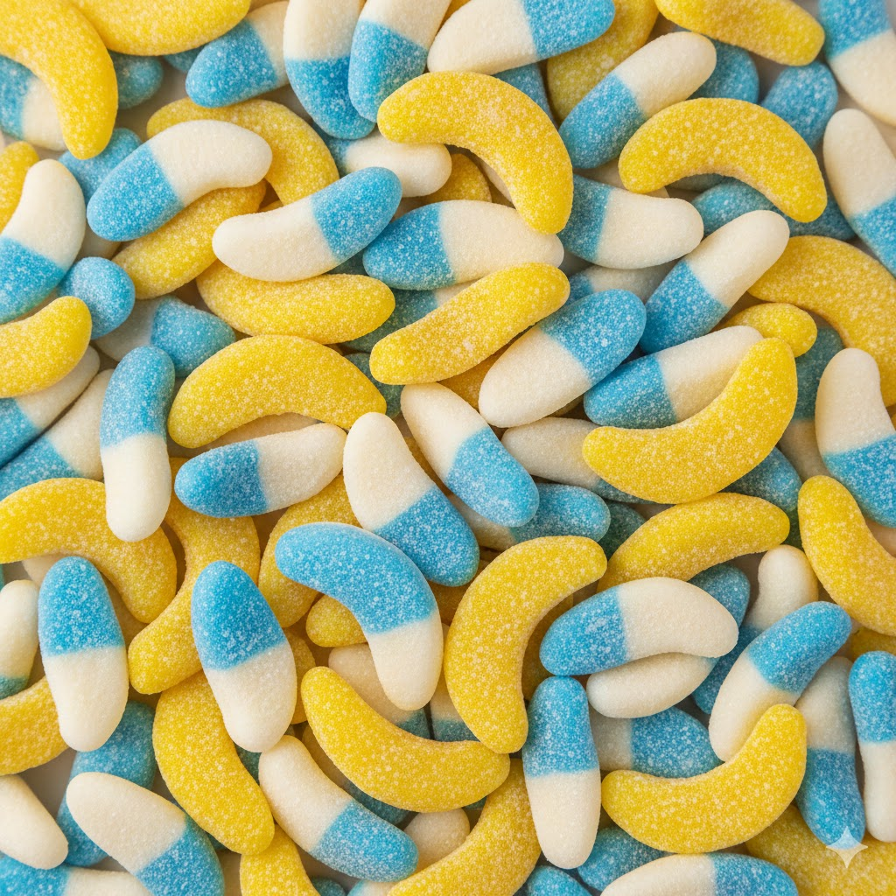
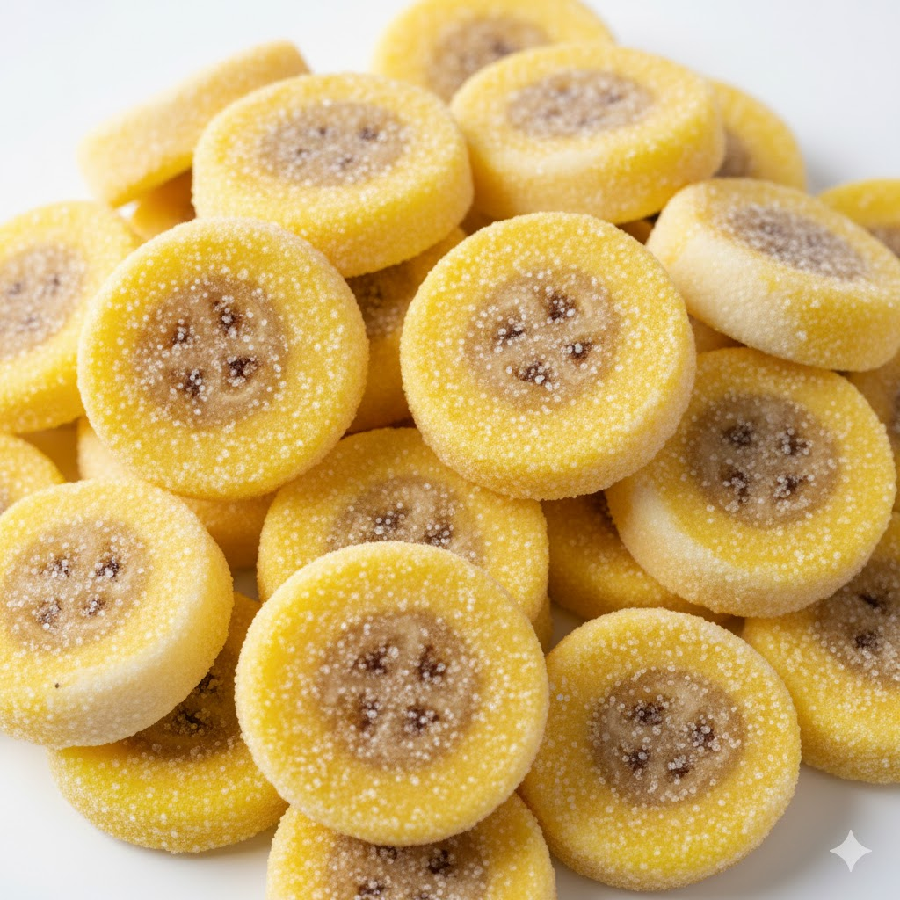
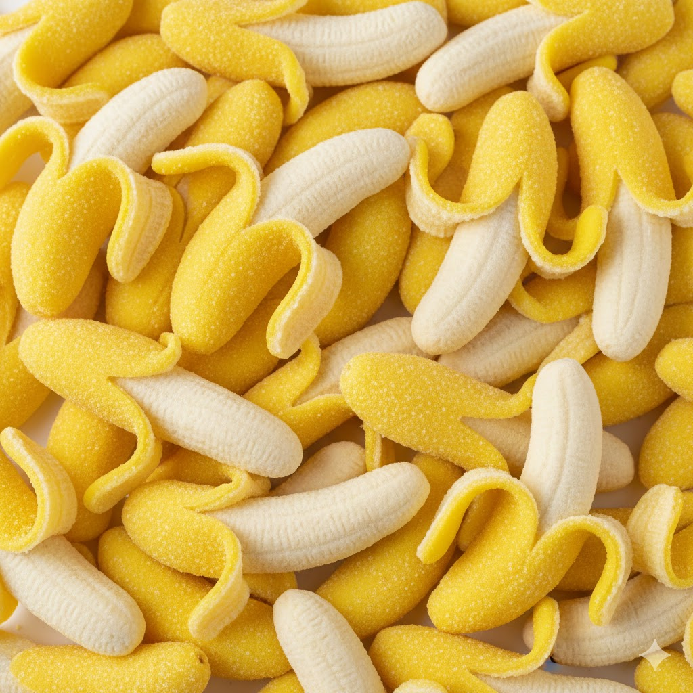
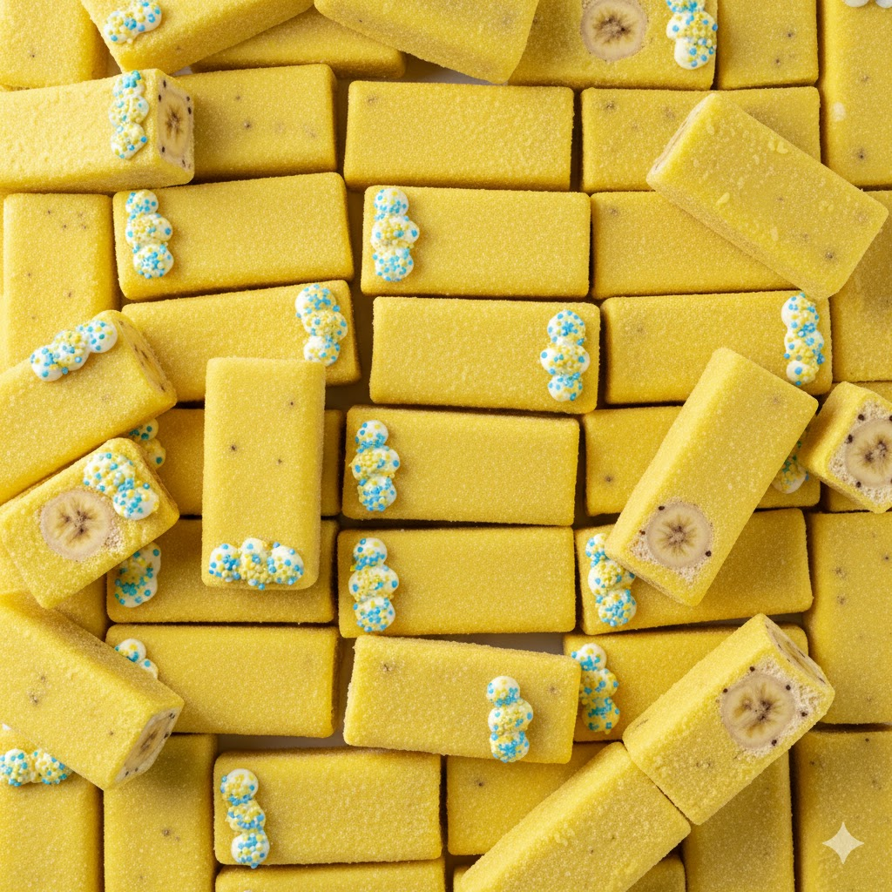

AMARILLO - PLÁTANO
PLÁTANO
EL SABOR MÁS SUAVE, CREMOSO Y DULCE: CLÁSICO, INCONFUNDIBLE Y MUY QUERIDO.
DESCRIPCIÓN
El sabor plátano es uno de los más icónicos dentro del mundo de las golosinas. Destaca por su
dulzor suave y una cremosidad muy característica que lo hace fácilmente reconocible. A diferencia
de otros sabores amarillos más ácidos, el plátano ofrece una experiencia dulce y envolvente,
perfecta para quienes buscan algo menos intenso pero muy aromático. Su aroma es potente y
delicioso, y suele estar asociado a chuches clásicas y muy queridas.
CURIOSIDADES SOBRE EL PLÁTANO
- El sabor a plátano en chuches suele representar la variedad “Gros Michel”.
- Su aroma es uno de los más fuertes y reconocibles incluso a distancia.
- Las gominolas de plátano son un clásico desde hace más de 40 años.
- Aunque es amarillo, no es ácido: destaca por su dulzura cremosa.
PERFIL DE SABOR DETALLADO
| ATRIBUTO |
VALOR |
DESCRIPCIÓN |
| Dulzor |
⭐⭐⭐ |
El sabor más dulce dentro de la familia amarilla. |
| Acidez |
⭐ |
Mínima, casi inexistente. |
| Intensidad aromática |
⭐⭐⭐⭐⭐ |
Aroma muy característico y reconocible. |
| Suavidad |
⭐⭐⭐⭐⭐ |
Textura agradable y cremosa en la mayoría de formatos. |
TIPOS DE CHUCHES DE PLÁTANO
- Plátanos de goma clásicos: el formato más querido y característico.
- Pitufos: suevas y esponjosas gominolas con forma de plátano y color de
pitufo.
- Rodajas: Nubes con sabor y forma de rodaja de plátano.
- Platanos pelables: menos comunes pero muy dulces e interactivas.
- Barritas de plátano: combinan cremosidad con textura exterior firme.




COMBINACIONES RECOMENDADAS
- Plátano + chocolate: una mezcla clásica y deliciosa.
- Gominolas de plátano + fresa: combinación dulce y muy equilibrada.
- Plátano + nata: potencia la cremosidad del sabor.
- Plátano + caramelo: mezcla intensa y aromática.
- Plátano + vainilla: aporta suavidad y aroma extra.
← Volver al índice